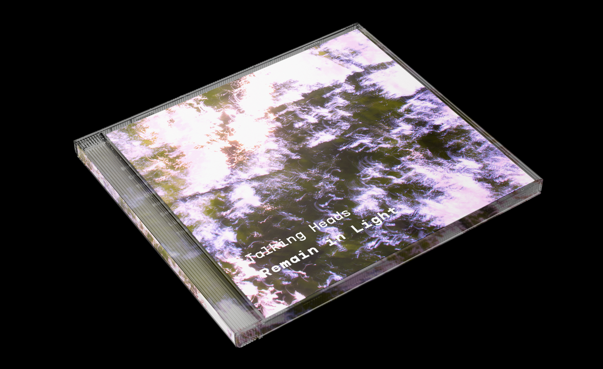
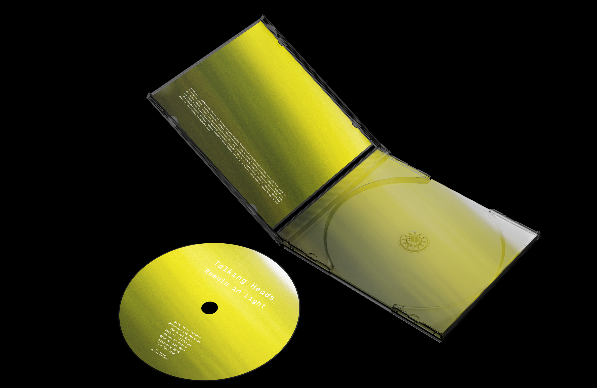

Talking Heads CD Redesign
The goal of this project was to redesign the CD packaging for the Talking Heads album 'Remain in Light.' The process for this project was two-pronged, with a photographic and typographic component. The priority was conveying the idea of 'light' through photography, which was done using long exposure photography with some manual manipulation. The typography was composed in a way that reflected both the overall aesthetic of the album and the aesthetic of the photography.
